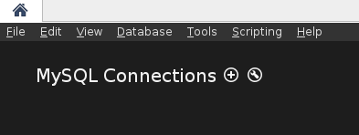
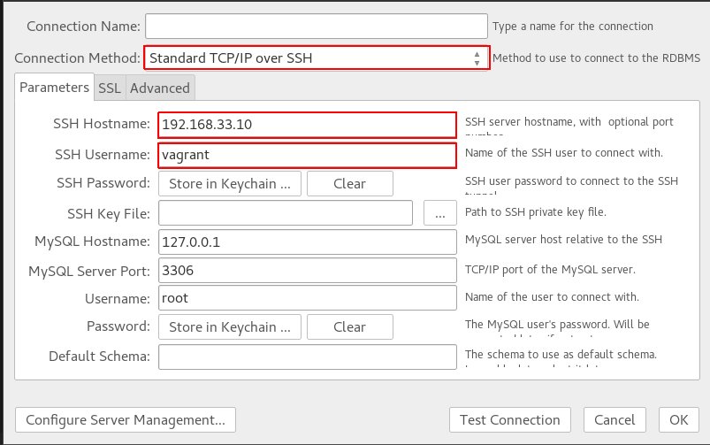

Table of Contents
Slowly but surely we get to the end of this series. In this last post, I will write about database access from the host system, while your database is running on the guest machine. Therefore I will present two strategies to do so. Sure you also can
vagrant ssh
via the terminal and access the database on the CLI. But viewing and fast editing of some tables is much more comfortable from a GUI. In this post I will go over two MySQL applications: MySQL Workbench and PHPMyAdmin. While the Workbench will be installed on your host system and access the database via ssh, PHPMyAdmin will be installed on the guest system, on the existing apache web server. Here we are able to access it over the hosts browser like our web app.
MySQL Workbench
The MySQL Workbench can be installed via your package manager or from their website. After the installation we start up the vagrant machine and open the workbench. You should see this area.

Click on the ”+” next to the MySQL Connections. Now a new dialog should open up.

Choose “Standard TCP/IP over SSH”. Afterwards fill out SSH Hostname and SSH username, like I did. At the top you can choose whatever name you like for the Connection Name. Then press Ok. Afterwards you should see your newly created Connection.

Double-Click it and you will be asked for the SSH password. Since we didn’t changed it yet, it’s still vagrant. Then you will be asked for the database password. If you followed this tutorial closely, this will be my_pw. Afterwards you should be logged into your database successfully and you can start interacting with it.
PHPMyAdmin
Here we process similar, like we did in the earlier posts. First we create a new shell script inside of our sh directory. We start off with the following content
debconf-set-selections <<< "phpmyadmin phpmyadmin/reconfigure-webserver multiselect apache2"
debconf-set-selections <<< "phpmyadmin phpmyadmin/dbconfig-install boolean true"
debconf-set-selections <<< "phpmyadmin phpmyadmin/mysql/admin-pass password my_pw"
debconf-set-selections <<< "phpmyadmin phpmyadmin/mysql/app-pass password my_pw"
debconf-set-selections <<< "phpmyadmin phpmyadmin/app-password-confirm password my_pw"This should look similar to you. We already did it, while installing MySQL. Because PHPMyAdmin is working with an interactive prompt as well, we pass the different parameters in before. Out of simplicity we go with my_pw as our password again. Now we can install it
apt-get install -y phpmyadmin
php5enmod mcryptOn PHP5 we need to enable the mcrypt library, otherwise we get an annoying red box inside of our PHPMyAdmin Frontend. The last part of our config looks like this.
if [ -f /vagrant/tmp/phpmyadmin.conf ]; then
mv /vagrant/tmp/phpmyadmin.conf /etc/apache2/sites-available/phpmyadmin.conf
a2ensite phpmyadmin.conf
else
>&2 echo "Error: phpmyadmin.conf not found"
fi
service apache2 restartWe put a virtual host configuration for the PHPMyAdmin page into the right place, like we did with our web app in the last post. Finally we restart the apache server. Our phpmyadmin.conf looks like this
<VirtualHost *:80>
ServerAdmin webmaster@dummy-host.com
DocumentRoot "/usr/share/phpmyadmin"
ServerName phpmyadmin.dev
ServerAlias www.phpmyadmin.dev
ErrorLog "/var/log/apache2/phpmyadmin.dev-error_log"
CustomLog "/var/log/apache2/phpmyadmin.dev-access_log" common
<Directory "/usr/share/phpmyadmin">
Options Indexes FollowSymLinks Includes MultiViews
Order allow,deny
Allow from all
AllowOverride All
</Directory>
</VirtualHost>This is almost the same, like we did in the last post, except for the new paths. Additionally we set some more directory options for PHPMyAdmin to make it’s routing possible. Next thing to do is add these scripts as partitioners to our Vagrantfile.
config.vm.provision "shell", path: "sh/phpmyadmin.sh"
config.vm.provision "file", source: "conf/phpmyadmin.conf", destination: "/vagrant/tmp/phpmyadmin.conf"Now we are only missing an entry in our hosts file, to make the new domain address known to our host machine. So we go to our hosts file again and add the following line
192.168.33.10 phpmyadmin.devThat’s it! Recreate or re-provision your vagrant machine and go to phpmyadmin.dev on your hosts web browser. You should see this page
Type in the credentials you have typed in earlier and you should be able to be in the web frontend of your database.